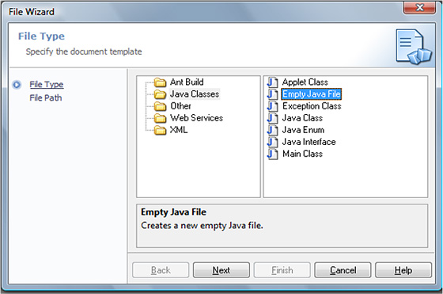
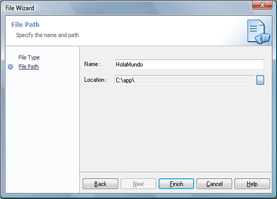
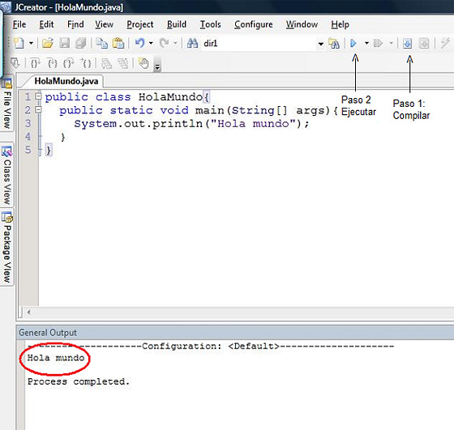

Curso de Java
Desde cero hasta conexiones con bases de datos MySQL
Curso de Java: Contenido
Iniciación: página 1
[ 1, 2, 3, 4, 5, 6, 7 ]
Iniciación al lenguaje Java
Instalación
Java funciona mediante un software conocido como la máquina virtual (JVM por sus siglas en inglés), que es el corazón del entorno de ejecución y que debe estar instalado en el sistema operativo para que las aplicaciones Java se ejecuten. En Windows está en una ruta semejante a esta:
C:\Program Files\Java\jre[versión]
En la que la versión es una sucesión de números como 1.4.5.6 , 1.6.0_07, etc.
Para que los programas puedan ejecutarse hay que asegurarse que el JRE (java run enviroment) esté instalado (que es lo más probable); si no, se descarga de www.java.com que es un sitio dedicado exclusivamente a la disponibilidad de la máquina virtual de Java.
Para programar es necesario el kit de desarrollo (JDK) que sirve para crear y probar las aplicaciones y que ya incluye el JRE. En el momento de la escritura de este curso la URL de descarga es: http://java.sun.com/javase/downloads/index.jsp
En la que debe elegirse la presentación sencilla que dice:
Java SE Development Kit (JDK)
JDK Update [versión]
En la que, de la misma manera, versión es un número como 12, 14, 15, etc.
Hay otras descargas que tienen JFX, JEE o NetBeans pero son más grandes y los complementos que ofrecen no son necesarios para los objetivos de este curso, aunque cualquiera de ellas sirve igual.
Una vez instalado el JDK estará en un subdirectorio semejante a este al que se le conoce como [JAVA-HOME]:
C:\Program Files\Java\jdk[versión]
En cuanto al desarrollo de aplicaciones, aunque es posible trabajar los archivos de Java con cualquier editor de texto plano, aquí lo haremos con la versión LE de JCreator cuya página de descarga es: http://www.jcreator.com/download.htm
JCreator no debe instalarse antes del JDK porque no funcionará.
Para probar que todo está como se espera debemos ejecutar JCreator y crear un archivo nuevo vacío:

Oprimimos <Next> y en el Name escribimos HolaMundo, así, todo junto y respetando las mayúsculas. Además, elegimos el subdirectorio donde se debe guardar el archivo y oprimimos <Finish>:

En seguida, copiamos y pegamos el siguiente programa:
public class HolaMundo{
public static void main(String[] args){
System.out.println("Hola mundo");
}
}
Obsérvese que el nombre de la clase y el del archivo son el mismo. Ejecutamos y compilamos con los botones que indica la figura siguiente y debe aparecer el mensaje “Hola mundo” en la ventana General Output:

Si no se obtiene este resultado, es inútil seguir adelante. Los errores los marcará JCreator y pueden deberse a que no está instalado el JDK o a que el programa se escribió a mano y tiene errores. El compilador crea un archivo llamado HolaMundo.class que es el que contiene el programa y el que la máquina virtual puede interpretar.